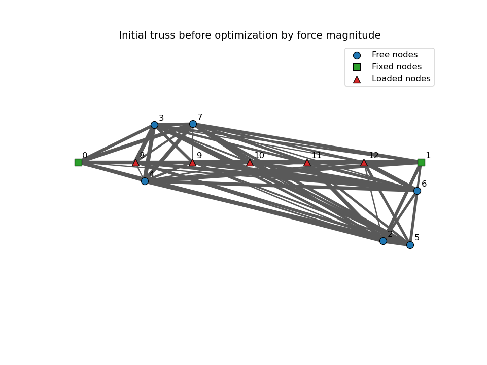
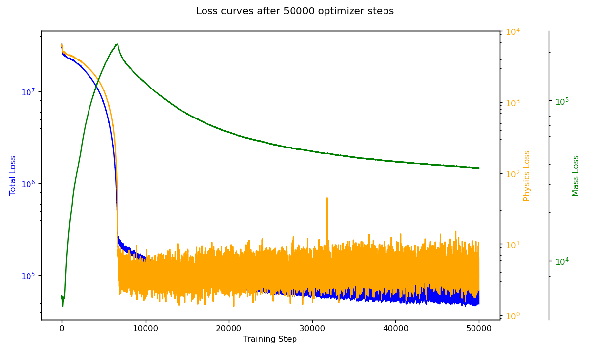
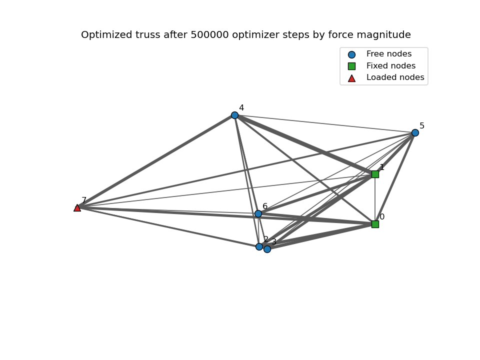

Generate Design Cases
Start with fixed supports, loaded nodes, free nodes, and candidate connections in a controlled 2D layout.
Machine Learning | Structural Optimization
Physics-informed optimization for lightweight 2D truss structures under load and support constraints.
Final Project
This team project explored whether machine learning methods could optimize truss and spaceframe structures by balancing two competing goals: satisfying static equilibrium and reducing member mass. The model treated a 2D structure as a connected graph, then adjusted member forces and movable node positions through a physics-informed loss function.
The work was completed with Johnathan Clayton and Khushi Kapoor. My focus was LaTeX integration, visualization of optimization results, and presenting the data and results sections.
Approach
Start with fixed supports, loaded nodes, free nodes, and candidate connections in a controlled 2D layout.
Resolve member forces into x and y components and penalize residual force imbalance at each non-fixed node.
Estimate cylindrical member weight from force, length, Young's modulus, and density, then combine it with the physics loss.
Plot structure snapshots and loss curves over training steps to make optimizer behavior diagnosable.
Results

The optimizer converged from a dense candidate network toward a readable load path, with thicker members indicating higher force magnitudes and low-force connections fading into secondary structure.

Animation of structural geometry and member force changes across optimizer checkpoints.

Tracking total loss, physics residual, and mass loss helped tune the tradeoff between feasibility and weight.

A second load case used the same optimization framework to evaluate how geometry adapts to different constraints.
Artifacts
The final report documents the project motivation, related work, model formulation, experiments, limitations, and future extensions toward 3D spaceframes and stronger pruning rules.
Download final report